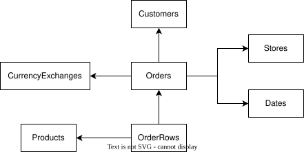

contoso_dict_columns()contoso

Contoso is a synthetic dataset containing sample sales transaction data for the fictional “Contoso” company. It includes various supporting tables for business intelligence, such as customer, store, product, and currency exchange data.
This dataset is perfect for practicing time series analysis, joins, financial modeling, or any business intelligence-related tasks.
It comes with a built-in dataset as well as the ability to create an in-memory database with duckdb
The package comes with the following tables:
-
sales:
- Contains information about sales transactions, including the total sales amount, customer, store, and product involved.
-
customer:
- Contains details about customers, such as customer key, name, address, and demographic information.
-
store:
- Contains information about stores, including store key, name, location, and related details.
-
product:
- Contains information about products, such as product key, name, category, and price.
-
fx:
- Contains foreign exchange rate data, mapping currency pairs to their exchange rates on specific dates.
-
calendar:
- Contains date-related information, including date, week, month, quarter, and year for use in time-based analysis.
-
orders:
- Contains information about individual orders, including order key, customer key, order date, and store information.
-
orderrows:
- Contains detailed line items for each order, including product key, quantity, and price for each item in the order.
Built into the package is the smallest version of the dataset: 7,794 sales lines across 3,242 orders and 3,165 customers.
Every column is documented in a machine-readable data dictionary, which contoso_dict_columns() returns as a tibble:
Using labelled::look_for(), you can also see the columns’ labels from the labelled package.
Inspiration to using labelled comes from Crystal Lewis excellent blog post
For larger datasets, use create_contoso_duckdb() with one of the following sizes:
| Size | Sales Rows |
|---|---|
| small | 7,794 |
| medium | 2,349,091 |
| large | 23,719,935 |
| mega | 237,245,485 |
Column names and types are identical across all four sizes; only the row counts differ.
Data Storage
The larger datasets are stored as Parquet files on Cloudflare R2 cloud storage and streamed directly into DuckDB via the public URL:
https://pub-6aa63519a4b945948cb8c88949b320ca.r2.devSource
The data is originally sourced from the sqlbi github site
Dataset overview

The relationship keys that join each of the tables are listed below.
| sales | customer | product | store | order | orderrows | fx |
|---|---|---|---|---|---|---|
| order_key | order_key | order_key | ||||
| customer_key | customer_key | customer_key | ||||
| store_key | store_key | store_key | ||||
| product_key | product_key | product_key | ||||
| currency_code | from_currency |
Installation
You can install the package from CRAN:
install.packages("contoso")Or install the development version from Codeberg:
# install.packages("pak")
pak::pak("git::https://codeberg.org/usrbinr/contoso")Example
library(contoso)
# Create a DuckDB connection to Contoso datasets
db <- create_contoso_duckdb(size = "medium")
# Access the sales dataset
db$sales |> head()
# Launch the DuckDB UI to explore all tables interactively
launch_ui(db$con)
# Clean up when done
DBI::dbDisconnect(db$con, shutdown = TRUE)